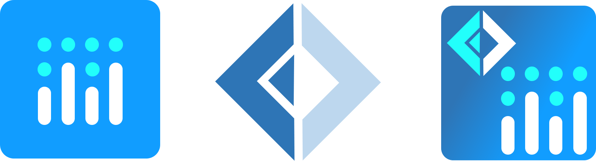
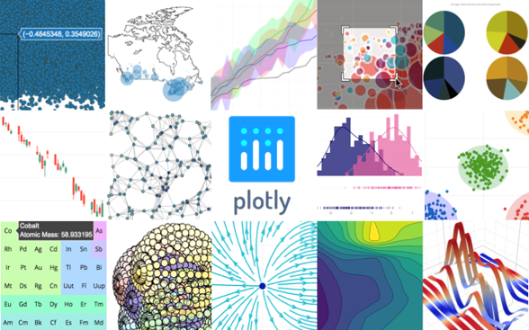
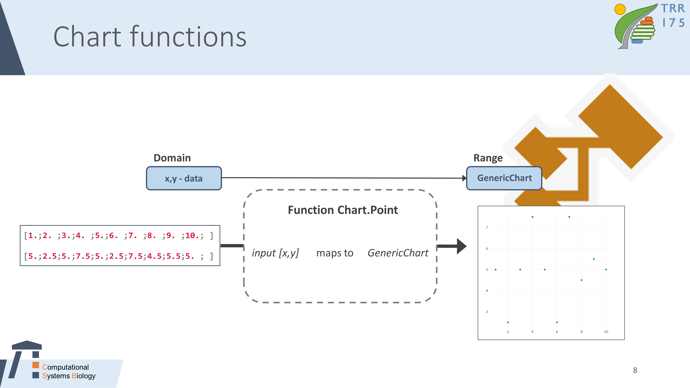
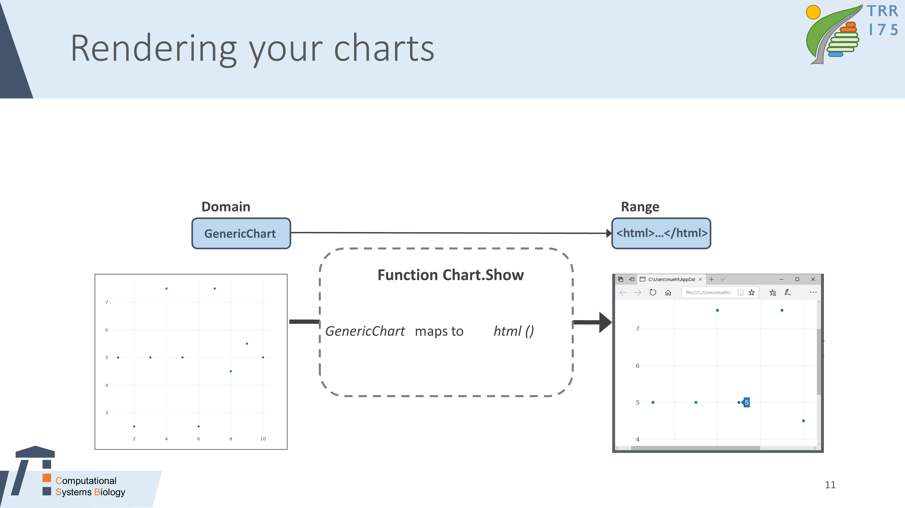
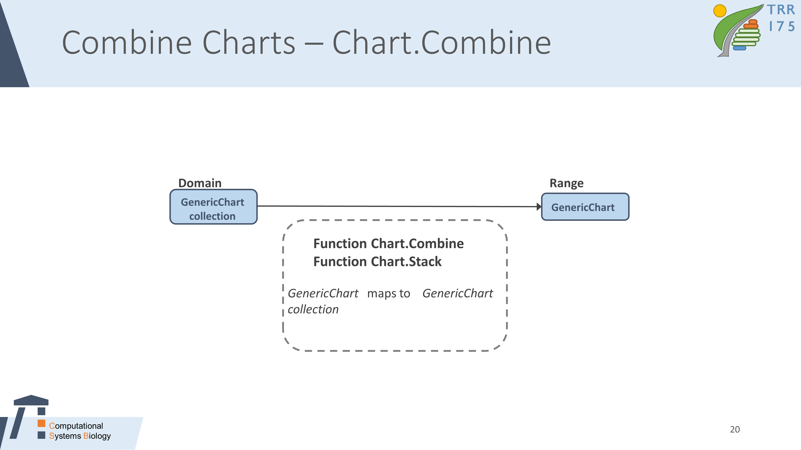

Kevin Schneider
In the scope of this post, I will shortly introduce Plotly.js and our .NET counterpart Plotly.NET.
I will go over the basic workflow to generate charts from data and how to style and combine charts.
Plotly.js is an open source charting library written in javascript.

Various chart types are supported. From simple scatter and line plots over heatmaps and various 3D-plots to Map charts,
you will find something fitting your needs for visualization.
One of the coolest things about these charts is that all of them are interactive, as you can see in the example below. You can Zoom in and out,
resize and move the axis, and much more.
No value returned by any evaluator
|
Plotly does not only generate your charts. It provides a service to change style and data of your chart after generation, which is called the chart studio.
Ýou can access the chart studio by clicking on the 'edit in chart studio' icon above the chart.
FSharp.Plotly is a FSharp wrapper for Plotly.js. The library provides a complete mapping for the configuration options of
the underlying library but empowers you to use multiple programming styles (object oriented, functional, mixtures). So you get a nice F# interface support with the full power of Plotly.
In general, the Chart functions are a mapping from any kind of data to a GenericChart type:

All chart functions (Point,Line,Heatmap,etc.) are provided as static methods of the Chart Class. All of them take the input data and map
to a GenericChart type. Creating a chart can be as easy as this:
open Plotly.NET
//Create some example data
/// x values ranging from 0 to 4 π
let xVals = [0. .. 0.01 .. (4. * System.Math.PI)]
/// Cosine values from 0 to 4 π
let yVals = xVals |> List.map cos
///GenericChart containing an X/Y scatter plot of the values above
let cosChart = Chart.Point(xVals,yVals)
All cool and good, but how to actually render a chart? This is pretty easy. We simply use the Chart.Show function, which can take any
GenericChart, generate the respective html file, and display it in your default browser.
In general, the Chart.Show function maps from the GenericChart type to unit, and rendering the html file as a side effect:

//Render the chart from the example above in your browser
cosChart
|> Chart.show
This will display the following chart in your browser:
No value returned by any evaluator
|
I don't know about you, but I think this chart could look a little bit better.
Styling charts with FSharp.Plotly can be done in multiple ways. We can use the optional parameters when initializing a chart:
open FSharpAux.Colors
let cosChart2 =
Chart.Point
(
xVals,
yVals,
MarkerSymbol = StyleParam.MarkerSymbol.Square,
MarkerColor = Color.fromKeyword LightGreen
)
No value returned by any evaluator
|
Or use a more functional style and pipe our chart into styling functions, which have even more control:
We first apply a similar styling as in the example above, but then additionally take control over the axis stylings (title,line style, and grid display):
let sinChart2 =
Chart.Point(xVals,yVals)
|> Chart.withMarkerStyle(Size = 1, Color = Color.fromKeyword LightGreen, Symbol = StyleParam.MarkerSymbol.Square)
|> Chart.withTitle("sin(x)")
|> Chart.withXAxisStyle("x", ShowLine = true, ShowGrid = false, MinMax = (0.,(4.* System.Math.PI)))
|> Chart.withYAxisStyle("y", ShowLine = true, ShowGrid = false)
No value returned by any evaluator
|
I am a fan of mirrored axis. There is no option to do that in Chart.withX_AxisStyle.
To have even more control over the Axis, we can initialize custom axis. This has to be implemented as a
function because of the axis object may be mutated by styling functions when used in different charts.
We can prevent this by using a function that for every chart returns a new Axis.
open Plotly.NET.LayoutObjects
let myXAxis () =
LinearAxis.init(
Title = Title.init("x"),
ShowGrid= false,
ShowLine= true,
Mirror = StyleParam.Mirror.All,
Range = StyleParam.Range.MinMax (0.,(4. * System.Math.PI)),
TickMode = StyleParam.TickMode.Array,
TickVals = ([|0. .. (0.5 * System.Math.PI) .. (4. * System.Math.PI)|] |> Array.map (round 2)),
Ticks = StyleParam.TickOptions.Inside
)
let myYAxis () =
LinearAxis.init(
Title = Title.init("y"),
ShowGrid= false,
ShowLine= true,
Mirror = StyleParam.Mirror.AllTicks,
Range = StyleParam.Range.MinMax (-1.,1.),
TickMode = StyleParam.TickMode.Auto,
Ticks = StyleParam.TickOptions.Inside
)
let mirroredSinChart =
Chart.Point(xVals,yVals)
|> Chart.withMarkerStyle(Size = 1, Color = Color.fromKeyword DarkBlue, Symbol = StyleParam.MarkerSymbol.Square)
|> Chart.withTitle("sin(x)")
|> Chart.withXAxis(myXAxis())
|> Chart.withYAxis(myYAxis())
|> Chart.withSize(750.,750.)
No value returned by any evaluator
|
To leverage the full power of data visualization, we often want to display multiple data series in the same plot. There are basically
two options: Combining charts in a single plot or displaying them side-by-side in a stacked chart. Both functions map from a GenericChart collection to a single GenericChart:

The Chart.combine function creates a single plot with the same axis from a collection of charts:
let combinedChart =
[
Chart.Spline(xVals,xVals |> List.map sin, Name="sin(x)")
Chart.Spline(xVals,xVals |> List.map cos,Name="cos(x)")
]
|> Chart.combine
|> Chart.withTitle("sin(x) and cos(x)")
|> Chart.withXAxis(myXAxis())
|> Chart.withYAxis(myYAxis())
|> Chart.withSize(750.,750.)
No value returned by any evaluator
|
The Chart.Stack function creates a multichart with the contents in a given collection of charts.
All subplots keep their own axis.
let stackedChart =
[
Chart.Spline(xVals,xVals |> List.map sin)
|> Chart.withTraceName(Name = "sin(x)")
|> Chart.withYAxis(myYAxis())
|> Chart.withXAxis(myXAxis())
Chart.Spline(xVals,xVals |> List.map cos)
|> Chart.withTraceName(Name = "sin(x)")
|> Chart.withYAxis(myYAxis())
|> Chart.withXAxis(myXAxis())
]
|> Chart.SingleStack()
No value returned by any evaluator
|
namespace Plotly
namespace Plotly.NET
namespace FSharpAux
val xSin : float list
namespace System
type Math =
static member Abs : value: decimal -> decimal + 7 overloads
static member Acos : d: float -> float
static member Acosh : d: float -> float
static member Asin : d: float -> float
static member Asinh : d: float -> float
static member Atan : d: float -> float
static member Atan2 : y: float * x: float -> float
static member Atanh : d: float -> float
static member BigMul : a: int * b: int -> int64 + 2 overloads
static member BitDecrement : x: float -> float
...
<summary>Provides constants and static methods for trigonometric, logarithmic, and other common mathematical functions.</summary>
field System.Math.PI: float = 3.14159265359
<summary>Represents the ratio of the circumference of a circle to its diameter, specified by the constant, π.</summary>
val ySin : float list
Multiple items
module List
from FSharpAux
--------------------
module List
from Microsoft.FSharp.Collections
<summary>Contains operations for working with values of type <see cref="T:Microsoft.FSharp.Collections.list`1" />.</summary>
<namespacedoc><summary>Operations for collections such as lists, arrays, sets, maps and sequences. See also
<a href="https://docs.microsoft.com/dotnet/fsharp/language-reference/fsharp-collection-types">F# Collection Types</a> in the F# Language Guide.
</summary></namespacedoc>
--------------------
type List<'T> =
| ( [] )
| ( :: ) of Head: 'T * Tail: 'T list
interface IReadOnlyList<'T>
interface IReadOnlyCollection<'T>
interface IEnumerable
interface IEnumerable<'T>
member GetReverseIndex : rank:int * offset:int -> int
member GetSlice : startIndex:int option * endIndex:int option -> 'T list
static member Cons : head:'T * tail:'T list -> 'T list
member Head : 'T
member IsEmpty : bool
member Item : index:int -> 'T with get
...
<summary>The type of immutable singly-linked lists.</summary>
<remarks>Use the constructors <c>[]</c> and <c>::</c> (infix) to create values of this type, or
the notation <c>[1;2;3]</c>. Use the values in the <c>List</c> module to manipulate
values of this type, or pattern match against the values directly.
</remarks>
<exclude />
val map : mapping:('T -> 'U) -> list:'T list -> 'U list
<summary>Builds a new collection whose elements are the results of applying the given function
to each of the elements of the collection.</summary>
<param name="mapping">The function to transform elements from the input list.</param>
<param name="list">The input list.</param>
<returns>The list of transformed elements.</returns>
val sin : value:'T -> 'T (requires member Sin)
<summary>Sine of the given number</summary>
<param name="value">The input value.</param>
<returns>The sine of the input.</returns>
val sinChart : GenericChart.GenericChart
type Chart =
static member AnnotatedHeatmap : zData:seq<#seq<'a1>> * annotationText:seq<#seq<string>> * ?Name:string * ?ShowLegend:bool * ?Opacity:float * ?X:seq<#IConvertible> * ?XGap:int * ?Y:seq<#IConvertible> * ?YGap:int * ?Text:'a5 * ?MultiText:seq<'a5> * ?ColorBar:ColorBar * ?ColorScale:Colorscale * ?ShowScale:bool * ?ReverseScale:bool * ?ZSmooth:SmoothAlg * ?Transpose:bool * ?UseWebGL:bool * ?ReverseYAxis:bool * ?UseDefaults:bool -> GenericChart (requires 'a1 :> IConvertible and 'a5 :> IConvertible)
static member Area : x:seq<#IConvertible> * y:seq<#IConvertible> * ?Name:string * ?ShowMarkers:bool * ?ShowLegend:bool * ?MarkerSymbol:MarkerSymbol * ?Color:Color * ?Opacity:float * ?Labels:seq<#IConvertible> * ?TextPosition:TextPosition * ?TextFont:Font * ?Dash:DrawingStyle * ?Width:float * ?UseDefaults:bool -> GenericChart + 1 overload
static member Bar : values:seq<#IConvertible> * ?Keys:seq<#IConvertible> * ?Name:string * ?ShowLegend:bool * ?Opacity:float * ?MultiOpacity:seq<float> * ?Text:'a2 * ?MultiText:seq<'a2> * ?MarkerColor:Color * ?MarkerColorScale:Colorscale * ?MarkerOutline:Line * ?MarkerPatternShape:PatternShape * ?MultiMarkerPatternShape:seq<PatternShape> * ?MarkerPattern:Pattern * ?Marker:Marker * ?Base:#IConvertible * ?Width:'a4 * ?MultiWidth:seq<'a4> * ?TextPosition:TextPosition * ?MultiTextPosition:seq<TextPosition> * ?UseDefaults:bool -> GenericChart (requires 'a2 :> IConvertible and 'a4 :> IConvertible) + 1 overload
static member BoxPlot : ?x:seq<#IConvertible> * ?y:seq<#IConvertible> * ?Name:string * ?ShowLegend:bool * ?Text:'a2 * ?MultiText:seq<'a2> * ?Fillcolor:Color * ?MarkerColor:Color * ?OutlierColor:Color * ?OutlierWidth:int * ?Opacity:float * ?WhiskerWidth:float * ?BoxPoints:BoxPoints * ?BoxMean:BoxMean * ?Jitter:float * ?PointPos:float * ?Orientation:Orientation * ?Marker:Marker * ?Line:Line * ?AlignmentGroup:string * ?Offsetgroup:string * ?Notched:bool * ?NotchWidth:float * ?QuartileMethod:QuartileMethod * ?UseDefaults:bool -> GenericChart (requires 'a2 :> IConvertible) + 1 overload
static member Bubble : x:seq<#IConvertible> * y:seq<#IConvertible> * sizes:seq<int> * ?Name:string * ?ShowLegend:bool * ?Opacity:float * ?MultiOpacity:seq<float> * ?Text:'a2 * ?MultiText:seq<'a2> * ?TextPosition:TextPosition * ?MultiTextPosition:seq<TextPosition> * ?MarkerColor:Color * ?MarkerColorScale:Colorscale * ?MarkerOutline:Line * ?MarkerSymbol:MarkerSymbol * ?MultiMarkerSymbol:seq<MarkerSymbol> * ?Marker:Marker * ?LineColor:Color * ?LineColorScale:Colorscale * ?LineWidth:float * ?LineDash:DrawingStyle * ?Line:Line * ?StackGroup:string * ?Orientation:Orientation * ?GroupNorm:GroupNorm * ?UseWebGL:bool * ?UseDefaults:bool -> GenericChart (requires 'a2 :> IConvertible) + 1 overload
static member Candlestick : open:seq<#IConvertible> * high:seq<#IConvertible> * low:seq<#IConvertible> * close:seq<#IConvertible> * x:seq<#IConvertible> * ?Name:string * ?ShowLegend:bool * ?Opacity:float * ?Text:'a5 * ?MultiText:seq<'a5> * ?Line:Line * ?IncreasingColor:Color * ?Increasing:FinanceMarker * ?DecreasingColor:Color * ?Decreasing:FinanceMarker * ?WhiskerWidth:float * ?UseDefaults:bool -> GenericChart (requires 'a5 :> IConvertible) + 1 overload
static member Column : values:seq<#IConvertible> * ?Keys:seq<#IConvertible> * ?Name:string * ?ShowLegend:bool * ?Opacity:float * ?MultiOpacity:seq<float> * ?Text:'a2 * ?MultiText:seq<'a2> * ?MarkerColor:Color * ?MarkerColorScale:Colorscale * ?MarkerOutline:Line * ?MarkerPatternShape:PatternShape * ?MultiMarkerPatternShape:seq<PatternShape> * ?MarkerPattern:Pattern * ?Marker:Marker * ?Base:#IConvertible * ?Width:'a4 * ?MultiWidth:seq<'a4> * ?TextPosition:TextPosition * ?MultiTextPosition:seq<TextPosition> * ?UseDefaults:bool -> GenericChart (requires 'a2 :> IConvertible and 'a4 :> IConvertible) + 1 overload
static member Contour : zData:seq<#seq<'a1>> * ?Name:string * ?ShowLegend:bool * ?Opacity:float * ?X:seq<#IConvertible> * ?Y:seq<#IConvertible> * ?Text:'a4 * ?MultiText:seq<'a4> * ?ColorBar:ColorBar * ?ColorScale:Colorscale * ?ShowScale:bool * ?ReverseScale:bool * ?Transpose:bool * ?LineColor:Color * ?LineDash:DrawingStyle * ?Line:Line * ?ContoursColoring:ContourColoring * ?ContoursOperation:ConstraintOperation * ?ContoursType:ContourType * ?ShowContourLabels:bool * ?ContourLabelFont:Font * ?Contours:Contours * ?FillColor:Color * ?NContours:int * ?UseDefaults:bool -> GenericChart (requires 'a1 :> IConvertible and 'a4 :> IConvertible)
static member Funnel : x:seq<#IConvertible> * y:seq<#IConvertible> * ?Name:string * ?ShowLegend:bool * ?Opacity:float * ?Width:float * ?Offset:float * ?Text:'a2 * ?MultiText:seq<'a2> * ?TextPosition:TextPosition * ?MultiTextPosition:seq<TextPosition> * ?Orientation:Orientation * ?AlignmentGroup:string * ?OffsetGroup:string * ?MarkerColor:Color * ?MarkerOutline:Line * ?Marker:Marker * ?TextInfo:TextInfo * ?ConnectorLineColor:Color * ?ConnectorLineStyle:DrawingStyle * ?ConnectorFillColor:Color * ?ConnectorLine:Line * ?Connector:FunnelConnector * ?InsideTextFont:Font * ?OutsideTextFont:Font * ?UseDefaults:bool -> GenericChart (requires 'a2 :> IConvertible)
static member Heatmap : zData:seq<#seq<'a1>> * ?Name:string * ?ShowLegend:bool * ?Opacity:float * ?X:seq<#IConvertible> * ?XGap:int * ?Y:seq<#IConvertible> * ?YGap:int * ?Text:'a4 * ?MultiText:seq<'a4> * ?ColorBar:ColorBar * ?ColorScale:Colorscale * ?ShowScale:bool * ?ReverseScale:bool * ?ZSmooth:SmoothAlg * ?Transpose:bool * ?UseWebGL:bool * ?ReverseYAxis:bool * ?UseDefaults:bool -> GenericChart (requires 'a1 :> IConvertible and 'a4 :> IConvertible) + 1 overload
...
static member Chart.Spline : xy:seq<#System.IConvertible * #System.IConvertible> * ?ShowMarkers:bool * ?Smoothing:float * ?Name:string * ?ShowLegend:bool * ?Opacity:float * ?MultiOpacity:seq<float> * ?Text:'a2 * ?MultiText:seq<'a2> * ?TextPosition:StyleParam.TextPosition * ?MultiTextPosition:seq<StyleParam.TextPosition> * ?MarkerColor:Color * ?MarkerColorScale:StyleParam.Colorscale * ?MarkerOutline:Line * ?MarkerSymbol:StyleParam.MarkerSymbol * ?MultiMarkerSymbol:seq<StyleParam.MarkerSymbol> * ?Marker:TraceObjects.Marker * ?LineColor:Color * ?LineColorScale:StyleParam.Colorscale * ?LineWidth:float * ?LineDash:StyleParam.DrawingStyle * ?Line:Line * ?StackGroup:string * ?Orientation:StyleParam.Orientation * ?GroupNorm:StyleParam.GroupNorm * ?UseWebGL:bool * ?UseDefaults:bool -> GenericChart.GenericChart (requires 'a2 :> System.IConvertible)
static member Chart.Spline : x:seq<#System.IConvertible> * y:seq<#System.IConvertible> * ?ShowMarkers:bool * ?Smoothing:float * ?Name:string * ?ShowLegend:bool * ?Opacity:float * ?MultiOpacity:seq<float> * ?Text:'c * ?MultiText:seq<'c> * ?TextPosition:StyleParam.TextPosition * ?MultiTextPosition:seq<StyleParam.TextPosition> * ?MarkerColor:Color * ?MarkerColorScale:StyleParam.Colorscale * ?MarkerOutline:Line * ?MarkerSymbol:StyleParam.MarkerSymbol * ?MultiMarkerSymbol:seq<StyleParam.MarkerSymbol> * ?Marker:TraceObjects.Marker * ?LineColor:Color * ?LineColorScale:StyleParam.Colorscale * ?LineWidth:float * ?LineDash:StyleParam.DrawingStyle * ?Line:Line * ?StackGroup:string * ?Orientation:StyleParam.Orientation * ?GroupNorm:StyleParam.GroupNorm * ?UseWebGL:bool * ?UseDefaults:bool -> GenericChart.GenericChart (requires 'c :> System.IConvertible)
static member Chart.withTitle : title:string * ?TitleFont:Font -> (GenericChart.GenericChart -> GenericChart.GenericChart)
module GenericChart
from Plotly.NET
<summary>
Module to represent a GenericChart
</summary>
val toChartHTML : gChart:GenericChart.GenericChart -> string
<summary>
Converts a GenericChart to it HTML representation. The div layer has a default size of 600 if not specified otherwise.
</summary>
val xVals : float list
x values ranging from 0 to 4 π
val yVals : float list
Cosine values from 0 to 4 π
val cos : value:'T -> 'T (requires member Cos)
<summary>Cosine of the given number</summary>
<param name="value">The input value.</param>
<returns>The cosine of the input.</returns>
val cosChart : GenericChart.GenericChart
GenericChart containing an X/Y scatter plot of the values above
static member Chart.Point : xy:seq<#System.IConvertible * #System.IConvertible> * ?Name:string * ?ShowLegend:bool * ?Opacity:float * ?MultiOpacity:seq<float> * ?Text:'a2 * ?MultiText:seq<'a2> * ?TextPosition:StyleParam.TextPosition * ?MultiTextPosition:seq<StyleParam.TextPosition> * ?MarkerColor:Color * ?MarkerColorScale:StyleParam.Colorscale * ?MarkerOutline:Line * ?MarkerSymbol:StyleParam.MarkerSymbol * ?MultiMarkerSymbol:seq<StyleParam.MarkerSymbol> * ?Marker:TraceObjects.Marker * ?StackGroup:string * ?Orientation:StyleParam.Orientation * ?GroupNorm:StyleParam.GroupNorm * ?UseWebGL:bool * ?UseDefaults:bool -> GenericChart.GenericChart (requires 'a2 :> System.IConvertible)
static member Chart.Point : x:seq<#System.IConvertible> * y:seq<#System.IConvertible> * ?Name:string * ?ShowLegend:bool * ?Opacity:float * ?MultiOpacity:seq<float> * ?Text:'c * ?MultiText:seq<'c> * ?TextPosition:StyleParam.TextPosition * ?MultiTextPosition:seq<StyleParam.TextPosition> * ?MarkerColor:Color * ?MarkerColorScale:StyleParam.Colorscale * ?MarkerOutline:Line * ?MarkerSymbol:StyleParam.MarkerSymbol * ?MultiMarkerSymbol:seq<StyleParam.MarkerSymbol> * ?Marker:TraceObjects.Marker * ?StackGroup:string * ?Orientation:StyleParam.Orientation * ?GroupNorm:StyleParam.GroupNorm * ?UseWebGL:bool * ?UseDefaults:bool -> GenericChart.GenericChart (requires 'c :> System.IConvertible)
static member Chart.show : ch:GenericChart.GenericChart -> unit
module Colors
from FSharpAux
<summary>
Represents an ARGB (alpha, red, green, blue) color
</summary>
val cosChart2 : GenericChart.GenericChart
module StyleParam
from Plotly.NET
type MarkerSymbol =
| Modified of MarkerSymbol * SymbolStyle
| Circle
| Square
| Diamond
| Cross
| X
| TriangleUp
| TriangleDown
| TriangleLeft
| TriangleRight
...
member Convert : unit -> obj
override ToString : unit -> string
static member convert : (MarkerSymbol -> obj)
static member toInteger : (MarkerSymbol -> int)
union case StyleParam.MarkerSymbol.Square: StyleParam.MarkerSymbol
Multiple items
module Color
from Plotly.NET
--------------------
type Color =
{ A: byte
R: byte
G: byte
B: byte }
<summary>
Color structure
</summary>
static member Color.fromKeyword : c:ColorKeyword -> Color
union case ColorKeyword.LightGreen: ColorKeyword
val sinChart2 : GenericChart.GenericChart
static member Chart.withMarkerStyle : ?AutoColorScale:bool * ?CAuto:bool * ?CMax:float * ?CMid:float * ?CMin:float * ?Color:Color * ?Colors:seq<Color> * ?ColorAxis:StyleParam.SubPlotId * ?ColorBar:LayoutObjects.ColorBar * ?Colorscale:StyleParam.Colorscale * ?Gradient:TraceObjects.Gradient * ?Outline:Line * ?Size:int * ?MultiSize:seq<int> * ?Opacity:float * ?MultiOpacity:seq<float> * ?Pattern:TraceObjects.Pattern * ?Symbol:StyleParam.MarkerSymbol * ?MultiSymbols:seq<StyleParam.MarkerSymbol> * ?OutlierColor:Color * ?Maxdisplayed:int * ?ReverseScale:bool * ?ShowScale:bool * ?SizeMin:int * ?SizeMode:StyleParam.MarkerSizeMode * ?SizeRef:int -> (GenericChart.GenericChart -> GenericChart.GenericChart)
static member Chart.withXAxisStyle : title:string * ?TitleFont:Font * ?MinMax:(float * float) * ?ShowGrid:bool * ?ShowLine:bool * ?Side:StyleParam.Side * ?Overlaying:StyleParam.LinearAxisId * ?Id:StyleParam.SubPlotId * ?Domain:(float * float) * ?Position:float * ?Zeroline:bool * ?Anchor:StyleParam.LinearAxisId -> (GenericChart.GenericChart -> GenericChart.GenericChart)
static member Chart.withYAxisStyle : title:string * ?TitleFont:Font * ?MinMax:(float * float) * ?ShowGrid:bool * ?ShowLine:bool * ?Side:StyleParam.Side * ?Overlaying:StyleParam.LinearAxisId * ?Id:StyleParam.SubPlotId * ?Domain:(float * float) * ?Position:float * ?ZeroLine:bool * ?Anchor:StyleParam.LinearAxisId -> (GenericChart.GenericChart -> GenericChart.GenericChart)
namespace Plotly.NET.LayoutObjects
val myXAxis : unit -> LinearAxis
Multiple items
type LinearAxis =
inherit DynamicObj
new : unit -> LinearAxis
static member init : ?Visible:bool * ?Color:Color * ?Title:Title * ?AxisType:AxisType * ?AutoTypeNumbers:AutoTypeNumbers * ?AutoRange:AutoRange * ?RangeMode:RangeMode * ?Range:Range * ?FixedRange:bool * ?ScaleAnchor:LinearAxisId * ?ScaleRatio:float * ?Constrain:AxisConstraint * ?ConstrainToward:AxisConstraintDirection * ?Matches:LinearAxisId * ?Rangebreaks:seq<Rangebreak> * ?TickMode:TickMode * ?NTicks:int * ?Tick0:#IConvertible * ?DTick:#IConvertible * ?TickVals:seq<#IConvertible> * ?TickText:seq<#IConvertible> * ?Ticks:TickOptions * ?TicksOn:CategoryTickAnchor * ?TickLabelMode:TickLabelMode * ?TickLabelPosition:TickLabelPosition * ?TickLabelOverflow:TickLabelOverflow * ?Mirror:Mirror * ?TickLen:int * ?TickWidth:int * ?TickColor:Color * ?ShowTickLabels:bool * ?AutoMargin:bool * ?ShowSpikes:bool * ?SpikeColor:Color * ?SpikeThickness:int * ?SpikeDash:DrawingStyle * ?SpikeMode:SpikeMode * ?SpikeSnap:SpikeSnap * ?TickFont:Font * ?TickAngle:int * ?ShowTickPrefix:ShowTickOption * ?TickPrefix:string * ?ShowTickSuffix:ShowTickOption * ?TickSuffix:string * ?ShowExponent:ShowExponent * ?ExponentFormat:ExponentFormat * ?MinExponent:float * ?SeparateThousands:bool * ?TickFormat:string * ?TickFormatStops:seq<TickFormatStop> * ?HoverFormat:string * ?ShowLine:bool * ?LineColor:Color * ?LineWidth:float * ?ShowGrid:bool * ?GridColor:Color * ?GridWidth:float * ?ZeroLine:bool * ?ZeroLineColor:Color * ?ZeroLineWidth:float * ?ShowDividers:bool * ?DividerColor:Color * ?DividerWidth:int * ?Anchor:LinearAxisId * ?Side:Side * ?Overlaying:LinearAxisId * ?Layer:Layer * ?Domain:Range * ?Position:float * ?CategoryOrder:CategoryOrder * ?CategoryArray:seq<#IConvertible> * ?UIRevision:#IConvertible * ?RangeSlider:RangeSlider * ?RangeSelector:RangeSelector * ?Calendar:Calendar * ?BackgroundColor:Color * ?ShowBackground:bool -> LinearAxis
static member initCarpet : ?Color:Color * ?Title:Title * ?AxisType:AxisType * ?AutoTypeNumbers:AutoTypeNumbers * ?AutoRange:AutoRange * ?RangeMode:RangeMode * ?Range:Range * ?FixedRange:bool * ?TickMode:TickMode * ?NTicks:int * ?Tick0:#IConvertible * ?DTick:#IConvertible * ?TickVals:seq<#IConvertible> * ?TickText:seq<#IConvertible> * ?Ticks:TickOptions * ?ShowTickLabels:bool * ?TickFont:Font * ?TickAngle:int * ?ShowTickPrefix:ShowTickOption * ?TickPrefix:string * ?ShowTickSuffix:ShowTickOption * ?TickSuffix:string * ?ShowExponent:ShowExponent * ?ExponentFormat:ExponentFormat * ?MinExponent:float * ?SeparateThousands:bool * ?TickFormat:string * ?TickFormatStops:seq<TickFormatStop> * ?ShowLine:bool * ?LineColor:Color * ?LineWidth:float * ?ShowGrid:bool * ?GridColor:Color * ?GridWidth:float * ?CategoryOrder:CategoryOrder * ?CategoryArray:seq<#IConvertible> * ?ArrayDTick:int * ?ArrayTick0:int * ?CheaterType:CheaterType * ?EndLine:bool * ?EndLineColor:Color * ?EndLineWidth:int * ?LabelPadding:int * ?LabelPrefix:string * ?LabelSuffix:string * ?MinorGridColor:Color * ?MinorGridCount:int * ?MinorGridWidth:int * ?Smoothing:float * ?StartLine:bool * ?StartLineColor:Color * ?StartLineWidth:int -> LinearAxis
static member initCategorical : categoryOrder:CategoryOrder * ?Visible:bool * ?Color:Color * ?Title:Title * ?AutoTypeNumbers:AutoTypeNumbers * ?AutoRange:AutoRange * ?RangeMode:RangeMode * ?Range:Range * ?FixedRange:bool * ?ScaleAnchor:LinearAxisId * ?ScaleRatio:float * ?Constrain:AxisConstraint * ?ConstrainToward:AxisConstraintDirection * ?Matches:LinearAxisId * ?Rangebreaks:seq<Rangebreak> * ?TickMode:TickMode * ?NTicks:int * ?Tick0:#IConvertible * ?DTick:#IConvertible * ?TickVals:seq<#IConvertible> * ?TickText:seq<#IConvertible> * ?Ticks:TickOptions * ?TicksOn:CategoryTickAnchor * ?TickLabelMode:TickLabelMode * ?TickLabelPosition:TickLabelPosition * ?TickLabelOverflow:TickLabelOverflow * ?Mirror:Mirror * ?TickLen:int * ?TickWidth:int * ?TickColor:Color * ?ShowTickLabels:bool * ?AutoMargin:bool * ?ShowSpikes:bool * ?SpikeColor:Color * ?SpikeThickness:int * ?SpikeDash:DrawingStyle * ?SpikeMode:SpikeMode * ?SpikeSnap:SpikeSnap * ?TickFont:Font * ?TickAngle:int * ?ShowTickPrefix:ShowTickOption * ?TickPrefix:string * ?ShowTickSuffix:ShowTickOption * ?TickSuffix:string * ?ShowExponent:ShowExponent * ?ExponentFormat:ExponentFormat * ?MinExponent:float * ?SeparateThousands:bool * ?TickFormat:string * ?TickFormatStops:seq<TickFormatStop> * ?HoverFormat:string * ?ShowLine:bool * ?LineColor:Color * ?LineWidth:float * ?ShowGrid:bool * ?GridColor:Color * ?GridWidth:float * ?ZeroLine:bool * ?ZeroLineColor:Color * ?ZeroLineWidth:float * ?ShowDividers:bool * ?DividerColor:Color * ?DividerWidth:int * ?Anchor:LinearAxisId * ?Side:Side * ?Overlaying:LinearAxisId * ?Layer:Layer * ?Domain:Range * ?Position:float * ?CategoryArray:seq<#IConvertible> * ?UIRevision:#IConvertible * ?RangeSlider:RangeSlider * ?RangeSelector:RangeSelector * ?Calendar:Calendar -> LinearAxis
static member initIndicatorGauge : ?DTick:#IConvertible * ?ExponentFormat:ExponentFormat * ?MinExponent:float * ?NTicks:int * ?Range:Range * ?SeparateThousands:bool * ?ShowExponent:ShowExponent * ?ShowTickLabels:bool * ?ShowTickPrefix:ShowTickOption * ?ShowTickSuffix:ShowTickOption * ?Tick0:#IConvertible * ?TickAngle:int * ?TickColor:Color * ?TickFont:Font * ?TickFormat:string * ?TickFormatStops:seq<TickFormatStop> * ?TickLen:int * ?TickMode:TickMode * ?TickPrefix:string * ?Ticks:TickOptions * ?TickSuffix:string * ?TickText:seq<#IConvertible> * ?TickVals:seq<#IConvertible> * ?TickWidth:int * ?Visible:bool -> LinearAxis
static member style : ?Visible:bool * ?Color:Color * ?Title:Title * ?AxisType:AxisType * ?AutoTypeNumbers:AutoTypeNumbers * ?AutoRange:AutoRange * ?RangeMode:RangeMode * ?Range:Range * ?FixedRange:bool * ?ScaleAnchor:LinearAxisId * ?ScaleRatio:float * ?Constrain:AxisConstraint * ?ConstrainToward:AxisConstraintDirection * ?Matches:LinearAxisId * ?Rangebreaks:seq<Rangebreak> * ?TickMode:TickMode * ?NTicks:int * ?Tick0:#IConvertible * ?DTick:#IConvertible * ?TickVals:seq<#IConvertible> * ?TickText:seq<#IConvertible> * ?Ticks:TickOptions * ?TicksOn:CategoryTickAnchor * ?TickLabelMode:TickLabelMode * ?TickLabelPosition:TickLabelPosition * ?TickLabelOverflow:TickLabelOverflow * ?Mirror:Mirror * ?TickLen:int * ?TickWidth:int * ?TickColor:Color * ?ShowTickLabels:bool * ?AutoMargin:bool * ?ShowSpikes:bool * ?SpikeColor:Color * ?SpikeThickness:int * ?SpikeDash:DrawingStyle * ?SpikeMode:SpikeMode * ?SpikeSnap:SpikeSnap * ?TickFont:Font * ?TickAngle:int * ?ShowTickPrefix:ShowTickOption * ?TickPrefix:string * ?ShowTickSuffix:ShowTickOption * ?TickSuffix:string * ?ShowExponent:ShowExponent * ?ExponentFormat:ExponentFormat * ?MinExponent:float * ?SeparateThousands:bool * ?TickFormat:string * ?TickFormatStops:seq<TickFormatStop> * ?HoverFormat:string * ?ShowLine:bool * ?LineColor:Color * ?LineWidth:float * ?ShowGrid:bool * ?GridColor:Color * ?GridWidth:float * ?ZeroLine:bool * ?ZeroLineColor:Color * ?ZeroLineWidth:float * ?ShowDividers:bool * ?DividerColor:Color * ?DividerWidth:int * ?Anchor:LinearAxisId * ?Side:Side * ?Overlaying:LinearAxisId * ?Layer:Layer * ?Domain:Range * ?Position:float * ?CategoryOrder:CategoryOrder * ?CategoryArray:seq<#IConvertible> * ?UIRevision:#IConvertible * ?RangeSlider:RangeSlider * ?RangeSelector:RangeSelector * ?Calendar:Calendar * ?ArrayDTick:int * ?ArrayTick0:int * ?CheaterType:CheaterType * ?EndLine:bool * ?EndLineColor:Color * ?EndLineWidth:int * ?LabelPadding:int * ?LabelPrefix:string * ?LabelSuffix:string * ?MinorGridColor:Color * ?MinorGridCount:int * ?MinorGridWidth:int * ?Smoothing:float * ?StartLine:bool * ?StartLineColor:Color * ?StartLineWidth:int * ?BackgroundColor:Color * ?ShowBackground:bool -> (LinearAxis -> LinearAxis)
<summary>Linear axes can be used as x and y scales on 2D plots, and as x,y, and z scales on 3D plots.</summary>
--------------------
new : unit -> LinearAxis
static member LinearAxis.init : ?Visible:bool * ?Color:Color * ?Title:Title * ?AxisType:StyleParam.AxisType * ?AutoTypeNumbers:StyleParam.AutoTypeNumbers * ?AutoRange:StyleParam.AutoRange * ?RangeMode:StyleParam.RangeMode * ?Range:StyleParam.Range * ?FixedRange:bool * ?ScaleAnchor:StyleParam.LinearAxisId * ?ScaleRatio:float * ?Constrain:StyleParam.AxisConstraint * ?ConstrainToward:StyleParam.AxisConstraintDirection * ?Matches:StyleParam.LinearAxisId * ?Rangebreaks:seq<Rangebreak> * ?TickMode:StyleParam.TickMode * ?NTicks:int * ?Tick0:#System.IConvertible * ?DTick:#System.IConvertible * ?TickVals:seq<#System.IConvertible> * ?TickText:seq<#System.IConvertible> * ?Ticks:StyleParam.TickOptions * ?TicksOn:StyleParam.CategoryTickAnchor * ?TickLabelMode:StyleParam.TickLabelMode * ?TickLabelPosition:StyleParam.TickLabelPosition * ?TickLabelOverflow:StyleParam.TickLabelOverflow * ?Mirror:StyleParam.Mirror * ?TickLen:int * ?TickWidth:int * ?TickColor:Color * ?ShowTickLabels:bool * ?AutoMargin:bool * ?ShowSpikes:bool * ?SpikeColor:Color * ?SpikeThickness:int * ?SpikeDash:StyleParam.DrawingStyle * ?SpikeMode:StyleParam.SpikeMode * ?SpikeSnap:StyleParam.SpikeSnap * ?TickFont:Font * ?TickAngle:int * ?ShowTickPrefix:StyleParam.ShowTickOption * ?TickPrefix:string * ?ShowTickSuffix:StyleParam.ShowTickOption * ?TickSuffix:string * ?ShowExponent:StyleParam.ShowExponent * ?ExponentFormat:StyleParam.ExponentFormat * ?MinExponent:float * ?SeparateThousands:bool * ?TickFormat:string * ?TickFormatStops:seq<TickFormatStop> * ?HoverFormat:string * ?ShowLine:bool * ?LineColor:Color * ?LineWidth:float * ?ShowGrid:bool * ?GridColor:Color * ?GridWidth:float * ?ZeroLine:bool * ?ZeroLineColor:Color * ?ZeroLineWidth:float * ?ShowDividers:bool * ?DividerColor:Color * ?DividerWidth:int * ?Anchor:StyleParam.LinearAxisId * ?Side:StyleParam.Side * ?Overlaying:StyleParam.LinearAxisId * ?Layer:StyleParam.Layer * ?Domain:StyleParam.Range * ?Position:float * ?CategoryOrder:StyleParam.CategoryOrder * ?CategoryArray:seq<#System.IConvertible> * ?UIRevision:#System.IConvertible * ?RangeSlider:RangeSlider * ?RangeSelector:RangeSelector * ?Calendar:StyleParam.Calendar * ?BackgroundColor:Color * ?ShowBackground:bool -> LinearAxis
Multiple items
type Title =
inherit DynamicObj
new : unit -> Title
static member init : ?Text:string * ?Font:Font * ?Standoff:int * ?Side:Side * ?X:float * ?Y:float -> Title
static member style : ?Text:string * ?Font:Font * ?Standoff:int * ?Side:Side * ?X:float * ?Y:float -> (Title -> Title)
--------------------
new : unit -> Title
static member Title.init : ?Text:string * ?Font:Font * ?Standoff:int * ?Side:StyleParam.Side * ?X:float * ?Y:float -> Title
type Mirror =
| True
| Ticks
| False
| All
| AllTicks
member Convert : unit -> obj
override ToString : unit -> string
static member convert : (Mirror -> obj)
static member toString : (Mirror -> string)
<summary>
Determines if the axis lines or/and ticks are mirrored to the opposite side of the plotting area. If "true", the axis lines are mirrored.
If "ticks", the axis lines and ticks are mirrored. If "false", mirroring is disable. If "all", axis lines are mirrored on all shared-axes subplots. If "allticks", axis lines and ticks are mirrored on all shared-axes subplots.
</summary>
union case StyleParam.Mirror.All: StyleParam.Mirror
type Range =
| MinMax of float * float
| Values of float array
member Convert : unit -> obj
static member convert : (Range -> obj)
<summary>
Defines a Range between min and max value
</summary>
union case StyleParam.Range.MinMax: float * float -> StyleParam.Range
type TickMode =
| Auto
| Linear
| Array
member Convert : unit -> obj
override ToString : unit -> string
static member convert : (TickMode -> obj)
static member toString : (TickMode -> string)
<summary>
Sets the tick mode for this axis. If "auto", the number of ticks is set via `nticks`. If "linear", the placement of the ticks is determined by a starting position `tick0` and a tick step `dtick` ("linear" is the default value if `tick0` and `dtick` are provided).
If "array", the placement of the ticks is set via `tickvals` and the tick text is `ticktext`. ("array" is the default value if `tickvals` is provided).
</summary>
union case StyleParam.TickMode.Array: StyleParam.TickMode
Multiple items
module Array
from FSharpAux
--------------------
module Array
from Microsoft.FSharp.Collections
<summary>Contains operations for working with arrays.</summary>
<remarks>
See also <a href="https://docs.microsoft.com/dotnet/fsharp/language-reference/arrays">F# Language Guide - Arrays</a>.
</remarks>
val map : mapping:('T -> 'U) -> array:'T [] -> 'U []
<summary>Builds a new array whose elements are the results of applying the given function
to each of the elements of the array.</summary>
<param name="mapping">The function to transform elements of the array.</param>
<param name="array">The input array.</param>
<returns>The array of transformed elements.</returns>
<exception cref="T:System.ArgumentNullException">Thrown when the input array is null.</exception>
val round : digits:int -> x:float -> float
<summary>
Rounds a double-precision floating-point value to a specified number of fractional digits.
</summary>
type TickOptions =
| Outside
| Inside
| Empty
member Convert : unit -> obj
override ToString : unit -> string
static member convert : (TickOptions -> obj)
static member toString : (TickOptions -> string)
<summary>
Determines whether ticks are drawn or not. If "", this axis' ticks are not drawn. If "outside" ("inside"), this axis' are drawn outside (inside) the axis lines.
</summary>
union case StyleParam.TickOptions.Inside: StyleParam.TickOptions
val myYAxis : unit -> LinearAxis
union case StyleParam.Mirror.AllTicks: StyleParam.Mirror
union case StyleParam.TickMode.Auto: StyleParam.TickMode
val mirroredSinChart : GenericChart.GenericChart
static member Chart.withMarkerStyle : ?AutoColorScale:bool * ?CAuto:bool * ?CMax:float * ?CMid:float * ?CMin:float * ?Color:Color * ?Colors:seq<Color> * ?ColorAxis:StyleParam.SubPlotId * ?ColorBar:ColorBar * ?Colorscale:StyleParam.Colorscale * ?Gradient:TraceObjects.Gradient * ?Outline:Line * ?Size:int * ?MultiSize:seq<int> * ?Opacity:float * ?MultiOpacity:seq<float> * ?Pattern:TraceObjects.Pattern * ?Symbol:StyleParam.MarkerSymbol * ?MultiSymbols:seq<StyleParam.MarkerSymbol> * ?OutlierColor:Color * ?Maxdisplayed:int * ?ReverseScale:bool * ?ShowScale:bool * ?SizeMin:int * ?SizeMode:StyleParam.MarkerSizeMode * ?SizeRef:int -> (GenericChart.GenericChart -> GenericChart.GenericChart)
union case ColorKeyword.DarkBlue: ColorKeyword
static member Chart.withXAxis : xAxis:LinearAxis * ?Id:StyleParam.SubPlotId -> (GenericChart.GenericChart -> GenericChart.GenericChart)
static member Chart.withYAxis : yAxis:LinearAxis * ?Id:StyleParam.SubPlotId -> (GenericChart.GenericChart -> GenericChart.GenericChart)
static member Chart.withSize : width:float * height:float -> (GenericChart.GenericChart -> GenericChart.GenericChart)
static member Chart.withSize : ?Width:int * ?Height:int -> (GenericChart.GenericChart -> GenericChart.GenericChart)
val combinedChart : GenericChart.GenericChart
static member Chart.combine : gCharts:seq<GenericChart.GenericChart> -> GenericChart.GenericChart
val stackedChart : GenericChart.GenericChart
static member Chart.withTraceName : ?Name:string * ?ShowLegend:bool * ?LegendGroup:string * ?Visible:StyleParam.Visible -> (GenericChart.GenericChart -> GenericChart.GenericChart)
static member Chart.SingleStack : ?SubPlots:(StyleParam.LinearAxisId * StyleParam.LinearAxisId) [] [] * ?XAxes:StyleParam.LinearAxisId [] * ?YAxes:StyleParam.LinearAxisId [] * ?RowOrder:StyleParam.LayoutGridRowOrder * ?Pattern:StyleParam.LayoutGridPattern * ?XGap:float * ?YGap:float * ?Domain:Domain * ?XSide:StyleParam.LayoutGridXSide * ?YSide:StyleParam.LayoutGridYSide -> (#seq<GenericChart.GenericChart> -> GenericChart.GenericChart)